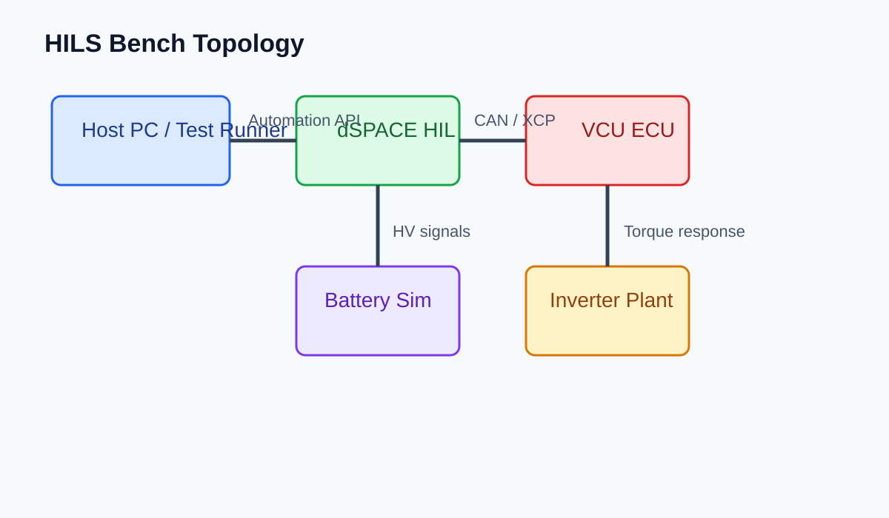

1. Scope
対象ベンチは dSPACE SCALEXIO + バッテリシミュレータ + インバータプラント。対象 ECU は INV_MAIN、CANoe から起動コマンドを発行する。

2. Preconditions
| 項目 | 期待値 | 備考 |
|---|---|---|
| 12V supply | 13.2 +/- 0.2 V | 低いと precharge 前に brownout が出る |
| HV simulated bus | 360 V standby | 起動後 340 V を下回らないこと |
| CAN gateway | Node state = operational | 起動直後 500 ms 以内に heartbeat を受信 |
3. Boot Steps
- ベンチ電源投入。PSU と HIL ラックが Ready を返すまで待機。
- CANoe configuration をロードし、VCU_IGN_CMD=1 を 100 ms 周期で送信。
- INV_MAIN.State が
PRECHARGEに遷移することを確認。 - HV bus > 340 V を満たしたら TorqueEnableReq=1 を送る。
- State=READY かつ DTC count=0 なら起動完了。
注: 手順 3 で 2 秒以上滞留した場合、FaultLatch より先に SupplyDip を疑う。
4. Verification Cues
[08:14:22.105] IGN_CMD=1 [08:14:22.442] INV_MAIN.State=PRECHARGE [08:14:23.018] HVBus=347.6V [08:14:23.121] INV_MAIN.State=READY
READY 遷移後 500 ms 以内に torque response dummy signal が 0 Nm を維持していること。振れがあるなら model side initial condition mismatch を切り分ける。
5. Rollback Path
異常時は TorqueEnableReq=0 → IGN_CMD=0 → PSU output off の順で戻す。ログ採取が未完なら bench reset を先に打たない。